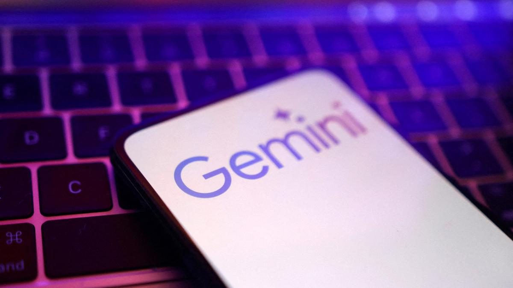

18 June, 2026

Google has put limits on Meta’s use of its Gemini AI models after the social media company sought more computing capacity than the rival tech group could provide, the Financial Times reported on Sunday.
Google, owned by Alphabet, told Meta around March it could not meet the full Gemini capacity the company had sought to purchase, the newspaper said, adding that the shortfall disrupted and delayed some of Meta’s internal AI projects.
Several other Google clients have also been affected, though to a lesser extent, according to the report. Meta has been particularly impacted due to its exceptionally high demand for Google’s models, the FT said.
Reuters could not immediately verify the report, which cited people familiar with the matter. Google and Meta did not immediately respond to requests for comment outside business hours.
Due to the restrictions, Meta has encouraged staff to be more efficient with AI tokens, the units that measure AI usage, the FT report said.
Even as companies continue to spend billions on chips and data centres, they are still struggling to secure enough computing power to support the growing demand for AI services.
Revenue at Google Cloud grew to $20 billion in the first quarter ended March, but CEO Sundar Pichai said computing power constraints prevented even higher growth and contributed to the cloud unit’s backlog nearly doubling quarter on quarter.